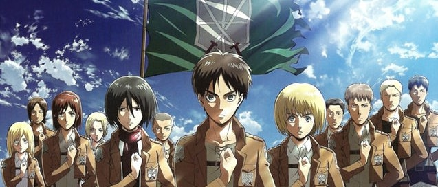
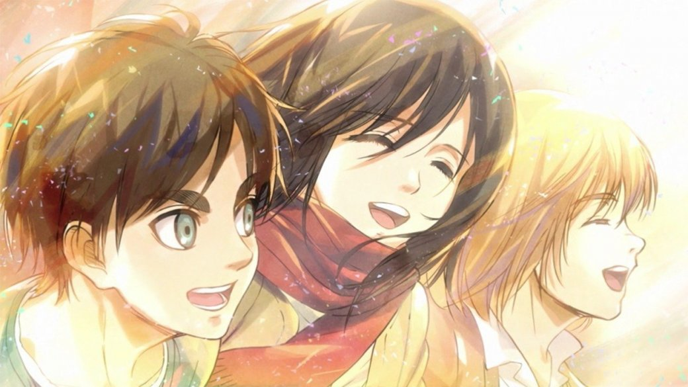
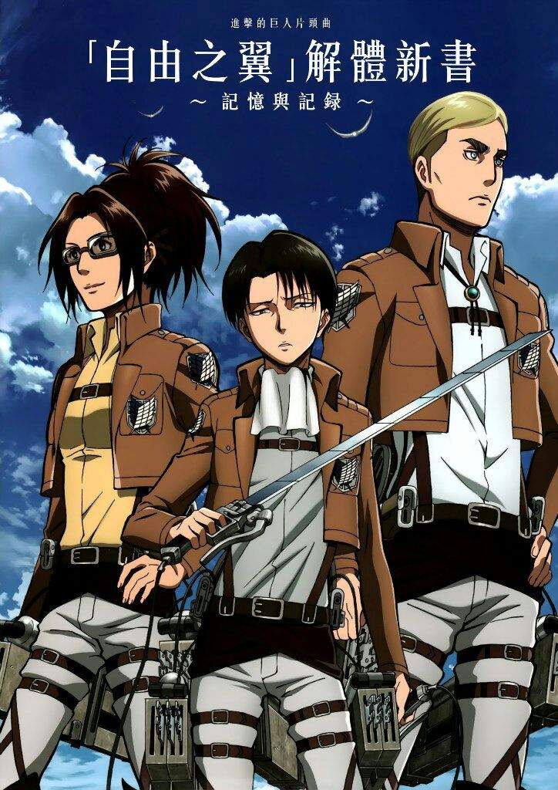
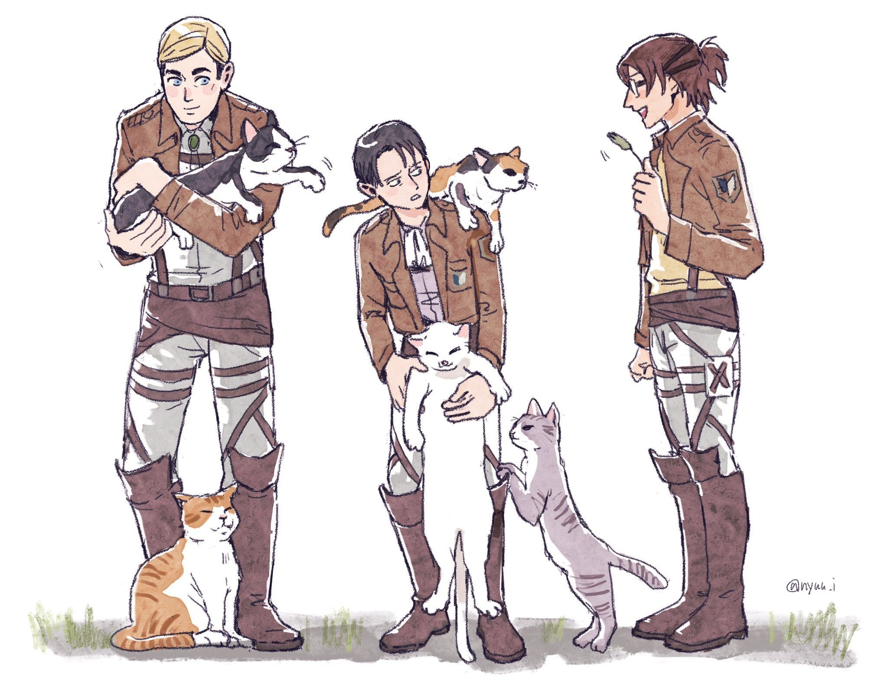
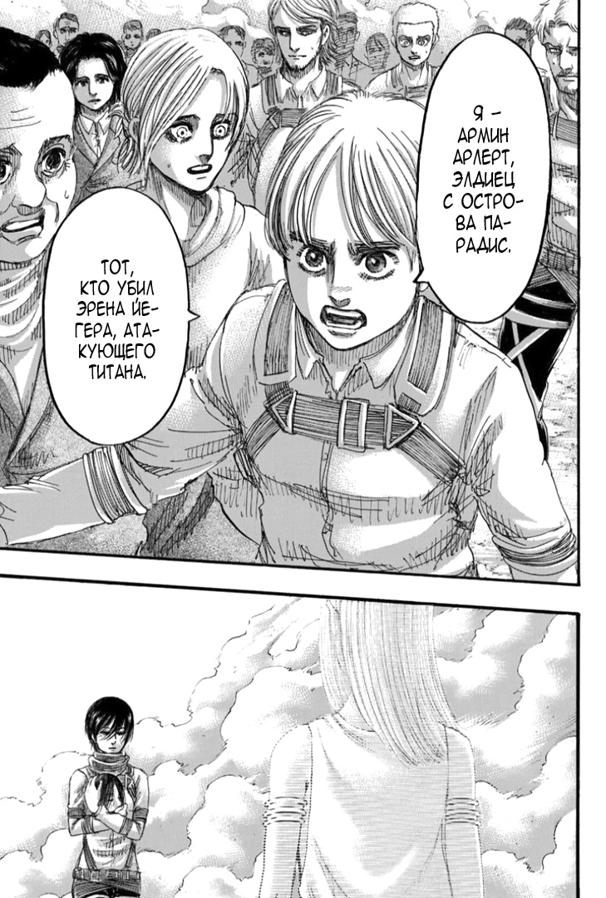
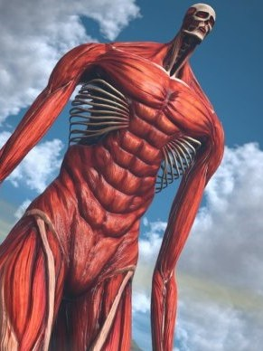
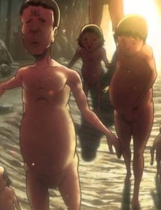

История
Топ самых популярных персонажей
История создания образа титанов
Манга
Первый титан
Вооружённый силы
Рост титанов
Атака Титанов

История
В центре событий «Атаки титанов» находятся трое героев: Эрен Йегер, его приёмная сестра Микаса Аккерман и их друг детства Армин Арлерт. В начале манги титаны под предводительством невиданных ранее разумных Колоссального титана и Бронированного титана вторгаются в их родной округ Сигансина, проломив ворота во внешней стене. Мать Эрена и Микасы погибает, а сами они вместе с Армином вынуждены искать укрытия за внутренними стенами. При этом отец Эрена, Гриша Йегер, перед отъездом оставляет сыну таинственный ключ от подвала в захваченном титанами городе. Титаны прорываются через стену Мария, оттесняют человечество за стену Роза. Эрен клянётся отомстить титанам, и все трое вступают в ряды армии. Через пять лет титаны прорываются в город Трост. Солдаты, включая Эрена, Микасу и Армина вступают с ними в бой, в ходе которого Эрена съедает титан, но прямо в желудке монстра он превращается в Атакующего титана, вырывается наружу и начинает убивать других титанов. Сначала, военные собираются уничтожить Эрена, под предлогом опасности его силы для человечества. (Именно тогда он узнает, что для превращения в гиганта ему требуется какая-либо цель.) С помощью своей силы он спасает своих друзей от артиллерийского удара со стены. Армин вместе с Дотом Пиксисом(глава гарнизона) решают использовать его силу для борьбы с чудовищами. Примером использования этой силы было то, что Эрен в форме титана закрыл валуном брешь в стене Троста. В ходе дальнейшего противостояния людей и титанов выясняется, что разумные титаны Колоссальный, Бронированный, Женская особь, Зубастый являются людьми, способными принимать облик титанов. Все они, кроме последнего, пытались захватить Эрена. В результате противостояния с ними Женская особь была взята в плен, но перед этим заточила себя в кристалле, а все остальные сбежали с территории, находящейся под контролем людей.

Топ самых популярных персонажей

История создания образа титанов
«Титаны» — плотоядные великаны, напоминающие людей, но отличающиеся огромным ростом — от трёх до пятнадцати метров, и в манге появляются создания ещё более чудовищных размеров. Титаны не носят никакой одежды и обладают различными особенностями, будь то отсутствие кожи, огромное туловище или пилообразные зубы. Они пожирают людей, хотя и не нуждаются в пище; передвигаются в одновременно комичной и пугающей манере. Автор манги Хадзимэ Исаяма, отвечая на вопрос, почему он выбрал великанов на роль противостоящих людям чудовищ, отвечал: «Великаны — это мерзко, вот почему». Существует и другая версия выбора автором великанов в качестве противников людей. Когда Исаяма работал в интернет-кафе, один покупатель схватил его за шиворот. Исаяма говорил, что этот инцидент показал ему «страх встретить человека, с которым я не могу общаться», это чувство он передал через Титанов.
Манга
В 2006 году Исаяма создал 65-страничную версию манги. Издать её согласились в отделе журнала Weekly Shōnen Magazine в Kodansha (ранее в отделе другого журнала Исаяме предложили внести изменения в произведение, но он отказался). По словам автора, создавая данное произведение он ежемесячно тратил одну неделю на раскадровку и три недели на то, чтобы нарисовать главу. В сентябре 2013 года автор заявил о желании закончить мангу, произведение планировалось завершить смертями всех персонажей, но потом Исаяма решил изменить концовку из-за популярности манги и её аниме-адаптации.
Первый титан
Около 2000 лет назад Имир Фриц заключила сделку с «дьяволом Земли» и стала первым титаном. Тринадцать лет спустя она погибла, а её сила была поделена на девять титанов, которые были переданы её потомкам. Вскоре девять титанов уничтожили древнюю империю Марлию и на завоёванном континенте создали Элдийскую империю. Поскольку при передаче силы титана важную роль играют кровные узы между носителем силы и её наследником, девять титанов находились под контролем благородных элдийских семей во времена империи. Примером этого может быть семьи Фриц или Тайбер. Все семьи, обладавшие силами титанов, постоянно враждовали между собой. Все, кроме королевской семьи Фриц. Этот конфликт был назван «Великая Война Титанов». Однако «Прародитель» старался поддерживать в империи относительный мир. Когда 145-й король Карл Фриц унаследовал силу Прародителя, он испытывал стыд за действия своего народа и сочувствовал марлийцам, которых в империи жестоко притесняли. Он сговорился с семьёй Тайбер и вместе они придумали мифического марлийского героя, Героса, который, якобы, победил Карла и прогнал его на остров Парадиз. Таким образом им удалось развязать гражданскую войну в Элдии. А когда она пала, Марлии удалось заполучить силы семи из девяти титанов. Скрыться удалось только Прародителю и Атакующему. Вскоре они начали передавать силы всех подконтрольных им титанов верным элдийским воинам. В это время Карл Фриц взял с собой множество элдийцев и отправился на Парадиз, где возвёл стены, превратив тысячи элдийцев в неразумных колоссальных титанов. Затем он стёр воспоминания оставшимся людям. Семье Тайбер было позволено сохранить у себя «Титана Молота Войны» потому что они были первыми, кто стал на сторону Марлии, предав семью Рейсс, которые контролировали Прародителя до тех пор, пока Гриша Йегер не съел последнего обладателя силы, Фриду, в 845 году, таким образом сократив число Титанов до восьми и объединил в себе Прародителя и Атакующего.
Вооружённые силы
Вооруженные силы (軍事 Gunji) разделены на три подразделения: Разведкорпус, который исследует территории за пределами стен; Гарнизон, который патрулирует и поддерживает Стены, не давая Титанам зайти в пределы стен, на случай если ворота будут разрушены, они в первую очередь задерживают и отвлекают титанов; и Военная полиция, высокопоставленные солдаты, которые служат личными охранниками для короля и поддерживают порядок в Стенах.
Рост титанов
| класс 60-метровых | титаны 15 метров | 7-5 метров |
|---|---|---|
|  |  |
 |